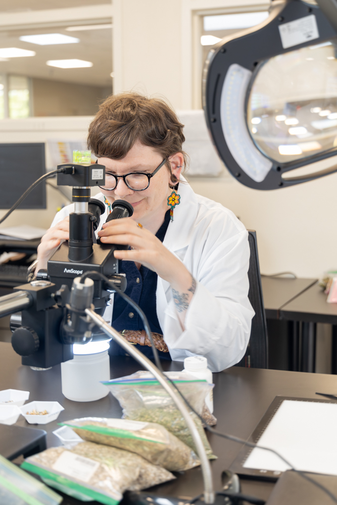
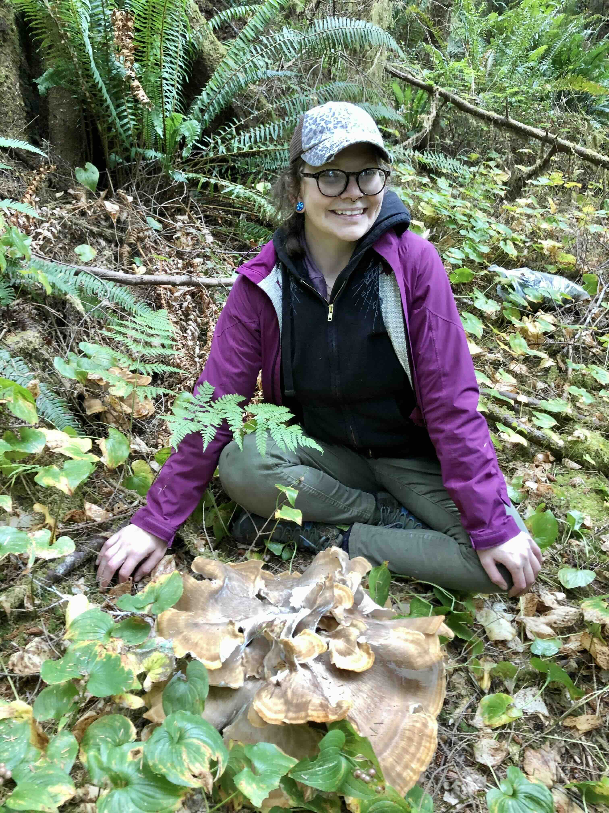
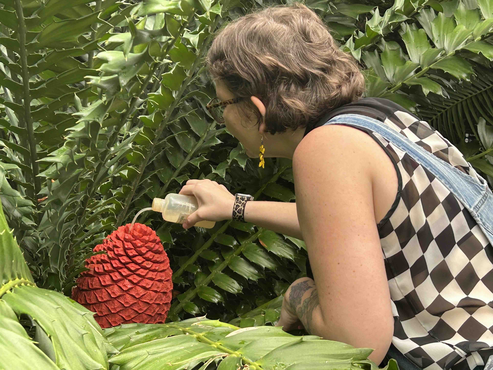

Food as Medicine: Lion’s Mane (Hericium erinaceus)
HerbalEGram, American Botanical Council — September 2024
Co-authored feature exploring traditional uses, modern research, and culinary applications of lion’s mane mushroom.
Read Article →Consultations, plant walks, and botanical education for curious people who want herbalism to feel clear, practical, and connected to place.

I'm Jasmine Zenderland, a botanist, educator, and herbalist. My work blends botanical science with traditional plant knowledge to help people build a more confident, connected relationship with herbs. Through consultations, classes, and field-based learning, I help make herbalism feel both rigorous and approachable.
For people who want personalized support and a clearer path with herbs.
Get practical, thoughtful guidance rooted in both traditional use and plant science.
Inquire about consultationsFor groups, students, and curious learners who want real botanical understanding.
Topics may include herbal foundations, plant ID, medicine making, and place-based learning.
See learning opportunitiesFor visitors, small groups, or locals who want to meet plants in the field.
Guided experiences centered on medicinal plants, ecology, and sensory connection to place.
Ask about a private walkJasmine’s work has been featured in scientific journals, policy briefs, and educational platforms.
HerbalEGram, American Botanical Council — September 2024
Co-authored feature exploring traditional uses, modern research, and culinary applications of lion’s mane mushroom.
Read Article →Economic Botany (Springer) — October 2019
Peer-reviewed study examining how “use value” varies between cultivated and wild plants across ethnobotanical datasets.
Read Article →MOST Policy Initiative / AAAS — August 2023
Community science note on regulation, safety challenges, and consumer considerations of herbal supplements in Missouri.
Read Brief →


Discover time-tested brewing techniques, seasonal energetics, and simple add-ins—grounded in tradition and backed by plant science.
Download the Guide
A food-as-medicine zine exploring everyday herbalism through plants, tradition, and practical kitchen wisdom.

Want updates on workshops and plant walks? Join my email list:
Use the contact form for consultations, classes, collaborations, or private events. I reply within 2–3 business days.
Instagram: @triplegemherbs
Location: Northern California • Serving clients everywhere